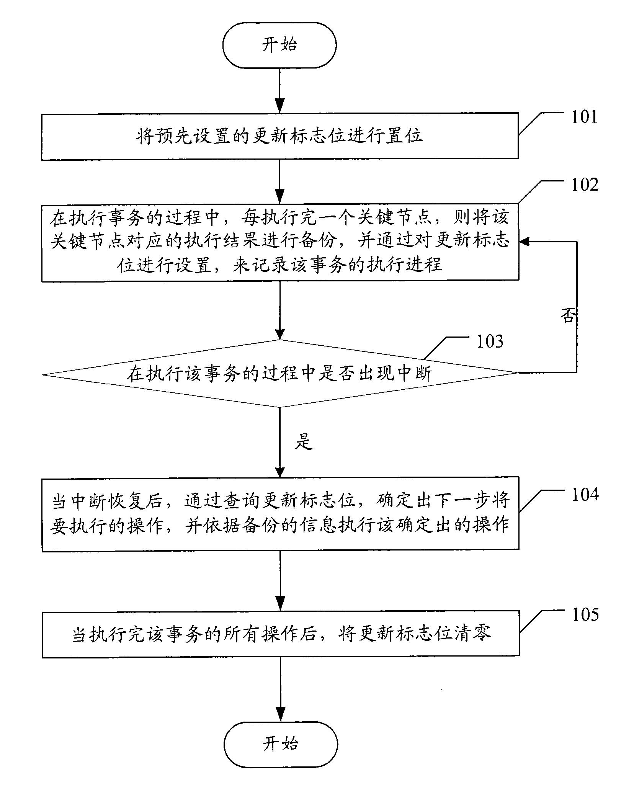

发明名称--一种智能卡操作方法以及一种智能卡
| 申请号 | CN200810225040.0 | 申请日 | 2008.10.24 | ||
| 公开（公告）号 | CN101382907A | 公开（公告）日 | 2009.03.11 | ||
| IPC分类号 | G06K7/00; G06F9/46 | 申请（专利权）人 | 普天信息技术研究院有限公司; | ||
| 发明人 | 曹会扬;张旭;杨光敏;姜涌; | 优先权号 |
摘要:
本发明公开了一种智能卡操作方法，包括：A.在执行一事务的过程中，每执行完一个关键节点，则将该关键节点对应的执行结果进行备份，并通过对预先设定的更新标志位进行设置，来记录所述事务的执行进程；所述关键节点为从完成所述事务所需的所有操作中预先选定的一个以上重要操作；B.如果在执行所述事务的过程中发生中断，则在中断恢复后，通过查询所述更新标志位，确定出下一步将要执行的操作，并依据所述备份的信息执行所述确定出的操作。本发明同时公开了一种智能卡。本发明所述的智能卡操作方法和智能卡能够满足实时以及非实时等各种业务的需求。
摘要附图:
